LOST IN
TRANSLATION
Abstract
This paper examines how replication reinforces culture and knowledge democratization through a historical analysis of Romanian Principalities and digital realm.
By researching typography within a broader discussion of ownership and access, this thesis investigates how typographic imitations and open-source culture function as practices that reinforce creativity, rather than being merely acts of intelectual propery violation. Arguing, that typography is a fundamental construct of daily communication, yet access to typographic tools and systems is controlled by monopolistic institutions and corporation, that value profit over expression.
The research focuses on the adoption of the Latin writing inside Romanian principalities, through a process known as Latinization. Extending this historical framework into the present, this paper draws parallels with open-source fonts and tools that resist capitalist monopoly in the design industry. Ultimately, it critically analyses piracy through a lens of global market innequality and personal storytelling.
Introduction
This research began as a reflection upon my personal relationship with typography and the writing system of my home country. In Moldova, Cyrillic and Latin scripts coexist as two dominant systems of writing, shaping perceptions of identity and belonging among its citizens. As one of the fundamental tools of expression, typography plays a crucial role in conveying cultural and political meaning. When these means of expression become limited, it can restrict ideas of freedom and self-expression. Therefore, it is crucial to note that the presence of both writing systems disrupts the sense of unity within Moldova, as each system has come to symbolize contrasting ideologies: tradition on one side and progress on the other.
How something as small as "letter" sparked ideas of suzerainty and independence inside Romanian Principalities?
There was no such understanding as the Romanian alphabet, nor was there a sense of unity and nation. Alphabet can be considered a fundamental construct of cultural identity, symbolizing history and tradition, prosperity and innovation. The Latin-based alphabet challenged the authority of the Orthodox Church and facilitated broader cultural democratization. Inspired by the French Revolution and enlightenment ideals, Romanian intellectuals influenced by these ideals reimaged writing as a tool of national identity rather than tools of religious propaganda. But how does one fight such an imposing power system when possesing the art of type design?
The following chapters will draw the parallels between the process of latinization and open-source tools, that at the core represent a rebelion against the limitations imposed by dominant structures. My goal is to present these case studies not as a mere act of copying but rather as a creative tool used by designers and makers to amplify their own voices. These gestures add originality to the designed typographic system and differentiate it from the initial source material. Reading from Tarde, brough me to the statement that "Difference manifests itself in repetition and marks a transformation that happens within repetition." It breaks what initially was considered as forgery and turns it into a creative flow, where two are never the same. Two identical at first glance copies, are different when overlayed on top of each other. The same goes for two "identical" typeafces that once overlayed, will never show 100% match in point structure.
Therefore, the Latinization of Romanian writing was not a simple copying of latin script. Instead, designers hybridized the Old Slavonic and Latin, adapting them to local needs and the printing technology of the time. They constructed an alternative version from an existing collection of cast letterforms from Vienna and Florence (fig.1), instead of using the dominant visual language of the Orthodox church.
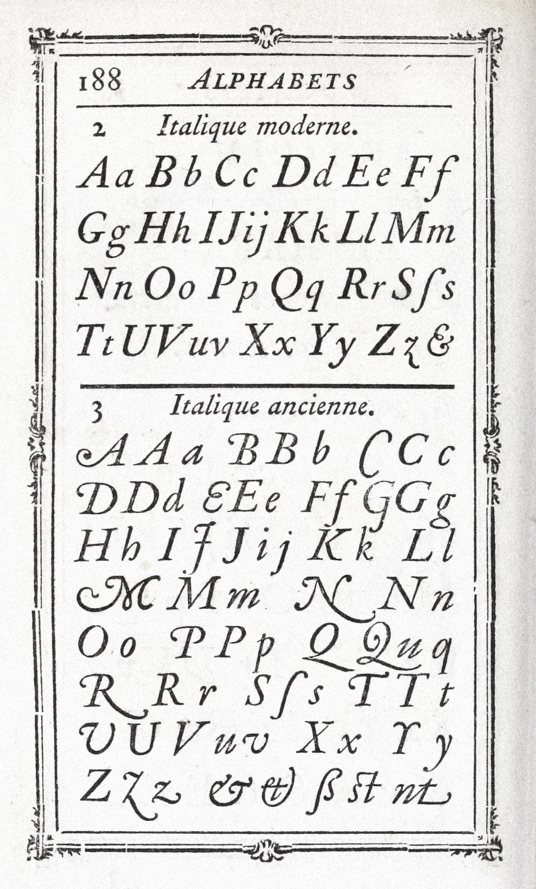
On the other hand, modern realities have their own monopolies. With the decline of the Church’s authority over written knowledge, power was gradually taken by the owners of advanced printing technology. They were aggressively buying up the publishing houses and creating an enclosed typographic system. Consequently brands were forced to surrender to the policies and regulations determined by intellectual property laws. In response, open-source platforms emerged in the realm of digital culture. Within this context, independent designers began developing their own tools, establishing self-curated type foundries and building independent archives.
With the expansion of the global market and the rise of giant corporations, media distribution is concentrated in the hands of a few, who have also the power to set the price and determine availability. Corporations such as Adobe and Microsoft dominate the software ecosystem, setting the standards and conditions under which designers and creators can access professional tools. These companies maintain a controlled environment through subscription-based models that limit access for those unable to afford recurring payments. As a result, we saw a tremendous increase in digital piracy over time, especially in areas where economic barriers exclude individuals from participation in the official market. It ties back to Moldova, where individuals are responsible for distributing pirate material, not for profit, but to benefit cultural consumption.
Could we upload any available media or tool into an open source environment?
Easily accessible digital tools and media allowed me to study and collect lore about the artifacts of the world. Using typefaces I couldn’t afford or downloading books, games, and movies that were otherwise impossible to access gave me the means to explore and understand Western culture through exposure and participation.
The following chapters will expand and reflect on this matter by examining historical sources, typographic evolution, and digital examples of open-source materials and piracy.
"For creativity to truly flourish, knowledge should never be in the hands of one institution. It should rather coexist only in an open world, where access enables the spread of knowledge within and beyond the community."
PART 1
Church. Authority. Opposition
"Social life is built on imitation, but imitation always produces variation." — Tarde
This section explores how, by adopting the political and cultural influence of the French Revolution, the Romanian principalities began to develop their own identity and typographic heritage while challenging the Orthodox church’s established power. To set the stage for this transformation, the following chapter explores printing and publishing, which grew significantly after the adoption of the Latin script and the gradual replacement of the old Slavonic writing system. As a result, knowledge became more accessible to a broader public and copying served a framework of referencing and a mechanism of learning from others.
Battle for men's minds
Prior to the 19th century, the Romanian Principalities primarily used the Cyrillic script, which was deeply tied to the Orthodox Church and its liturgical traditions. Old Slavonic functioned as the language of administration, religion, and scholarship. The linguistic and scriptural system, derived from Vyas (fig.2), reinforced the Church’s power monopoly over book production and its accessibility.
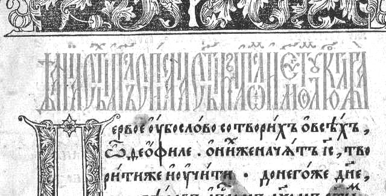
The establishment of the printing house in the Principalities of the sixteenth century was initiated by the church and local officials to meet their cultural needs and those of Slavic-speaking churches. It served as a crucial milestone in preserving the print production in the region. The presses were built in major cities and important cultural centers. The press played a vital role in strengthening the new centralized government by ensuring the circulation of books printed in Church Slavonic, thereby providing the necessary liturgical literature for the Slavs. Local printing techniques were constantly evolving, attracting printers and engravers into Romanian principalities and producing manuscripts and books for Balkan communities.
The use of the Cyrillic script meant a cultural orientation towards the Byzantine and Slavic world. In early manuscripts, typical spiral ornamentation can be noticed, sharing many Greek influences blended with Vyas (fig.3). These design elements symbolized both accession and a cultural connection to orthodox church ideologies. By the late 18th century, elite groups began to challenge the rigidity of this system, especially after encountering Western European models of literacy and governance. As a result, the church’s exclusivity appeared incompatible with emerging Enlightenment ideals, fostering ideas of change and revolution.
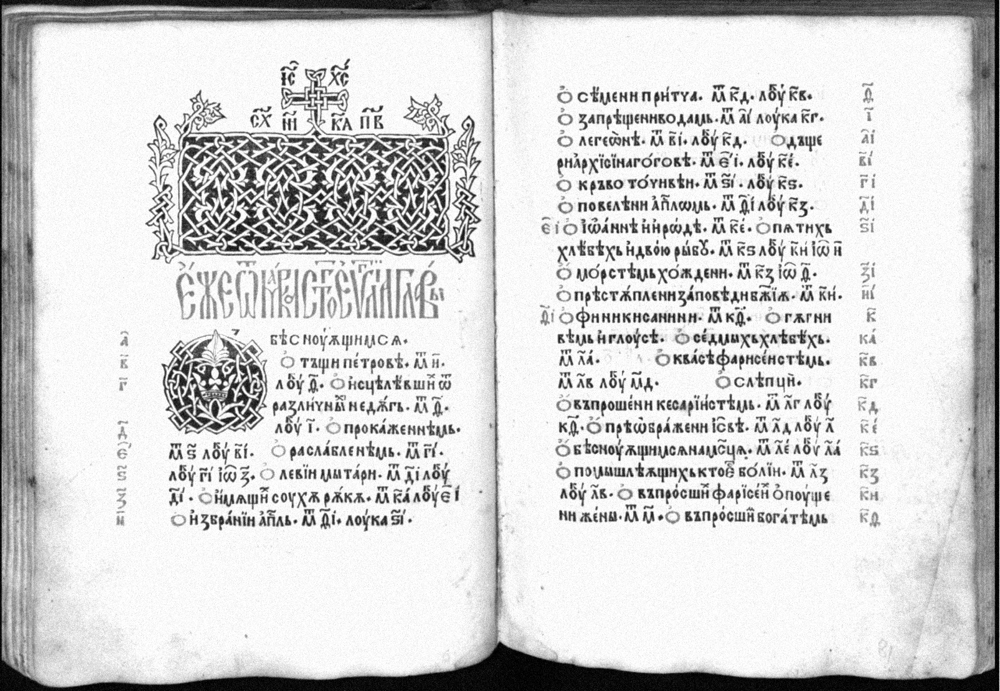
Revolution and Within
As the 19th century approached, a period of political instability defined the European map, giving rise to ideas of nationalism and independence. This context set the stage for the French Revolution of 1789, which, building on prior Western influences, played a pivotal role in reshaping the intellectual landscape—including that of the Romanian principalities. The French Revolution popularized ideals of freedom, equality, fraternity, and national sovereignty, which resonated closely with political elites. Motivated by these principles, elites pursued union and gradual consolidation of Romanian-speaking lands. As a direct result, publishing was no longer a privilege reserved for the state or the church.
"Thanks to the labours of the Humanists in reviving the broad literature of pre Christian antiquity and spreading it through the print-market, a new appreciation of the sophisticated stylistic achievements of the ancients was apparent among the trans-European intelligentsia. The Latin they now aspired to write became more and more Ciceronian, and, by the same token, increasingly removed from ecclesiastical and everyday life. In this way it acquired an esoteric quality quite different from that of Church Latin in mediaeval times For the older Latin was not arcane because of its subject matter or style, but simply because it was written at all, i.e. because of its status as text. Now it became arcane because of what was written, because of the language-in-itself."
This change in printing and design opened the collossal religious propaganda war, the so called "battle for men's minds".
national identity rooted in language and shared culture rather than affiliation to the church. Romanian scholars began to emphasize their ties to the Roman Empire and to advocate linguistic alignment with Western Europe. The Transylvanian school played a key role in shaping Romanian cultural identity. The first books were published in Romanian, along with the first grammar manuals, such as “Elemente linguae daco-romanae sive valachicae” (fig.4) by Gheorge Șincai.
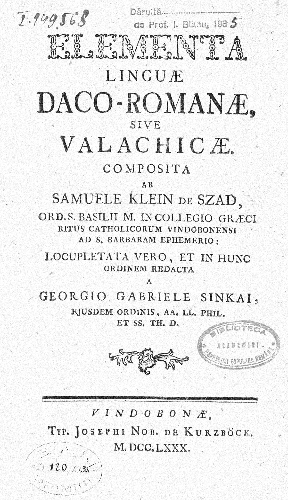
The production of type was not only associated with the sacred but was also reproduced on an industrial scale and distributed by industrial means. This change brought a new typographic demand, sparking enthusiasm for reworking and developing an updated typographic system. Within the context, a gradual replacement of the Cyrillic alphabet with the Latin alphabet symbolized the democratization of knowledge and the disruption of old structures. Language became accessible to more people, as the Latin-based alphabet was perceived as more systematic and easier to learn due to its principles of harmony and balance. (fig.5)
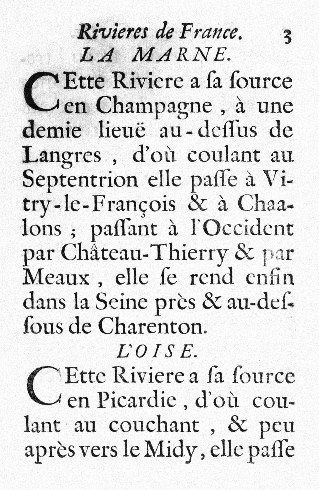
Transitional Type
With the massive import of metal casted typefaces, the typographic industry saw new opportunities for experimentation, thus amplifying the further development of script. The simplification of character structures also made printing easier and more consistent, creating a greater visual unity within the text block. Previously complex and irregular writing systems were gradually replaced by a more continuous and simplified flow of Latin characters, based on the designs of Nicolas Jenson and Francesco Griffo (fig.6). To ensure the gradual implementation of the new system, a transitional alphabet was introduced. (fig.7) Analyzing the structure from both Latin and Cyrillic scripts allowed typographers to find the right balance between familiarity and innovation. Type designers at the time had to prepare the public for the upcoming letterforms and literally transition shapes so they would resemble familiar ones. This method of copying brought an inventive approach to bear, in which composite letters were made to appear as if constructed from Latin letters, eventually revealing a uniform pattern. Still, 47 letters in the alphabet and the inconsistency of punchcutters suggested further development, leading to a complete switch to the Latin script.
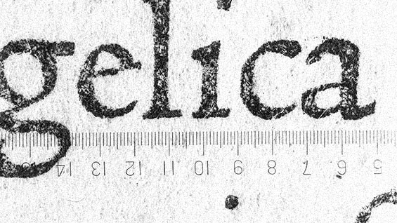
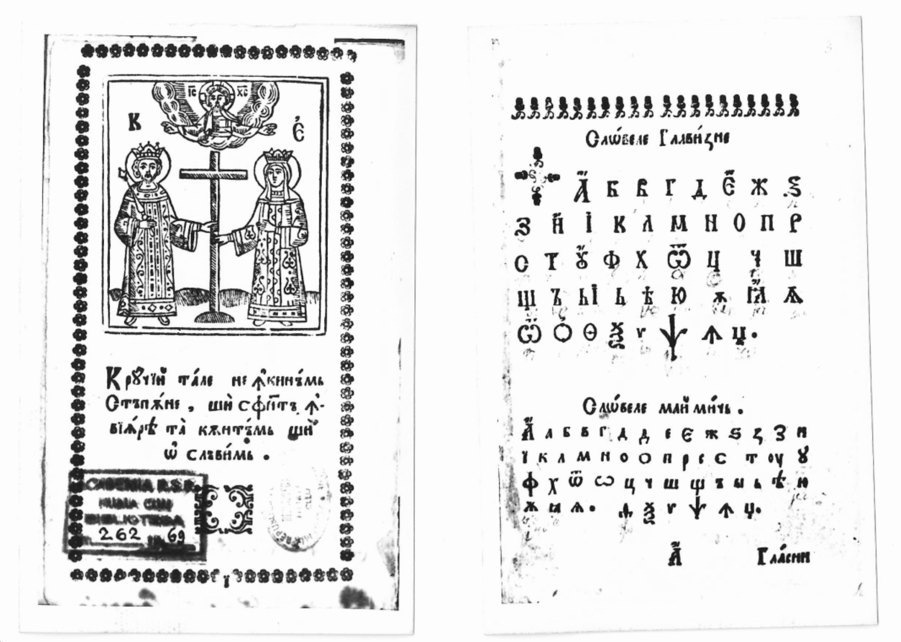
Among a number of print houses that saw a significant rise in the region, the work of Virgil Molin (fig.8) had the greatest graphic impact during the period. A Romanian typographer, graphic arts specialist, editor, and journalist, Molin played a fundamental role in the development of modern printing and graphic arts in the Romanian Principalities. Among his most influential works is a series of books titled Almanahul Graficei Române (“Graphical Almanac of Romania”). A particularly noteworthy feature of this series is the cover design, which deliberately depicts the transitional typeface style, resembling a blend of Old Slavonic ornamentation and the Latin fence system. Notable features include the double-storey “A” and extra curvature on “L”, with a rounded, fluid construction overall. This is further noticeable in the letter “U”, which is a direct descendant of the 18th-century manuscripts. (fig.9)
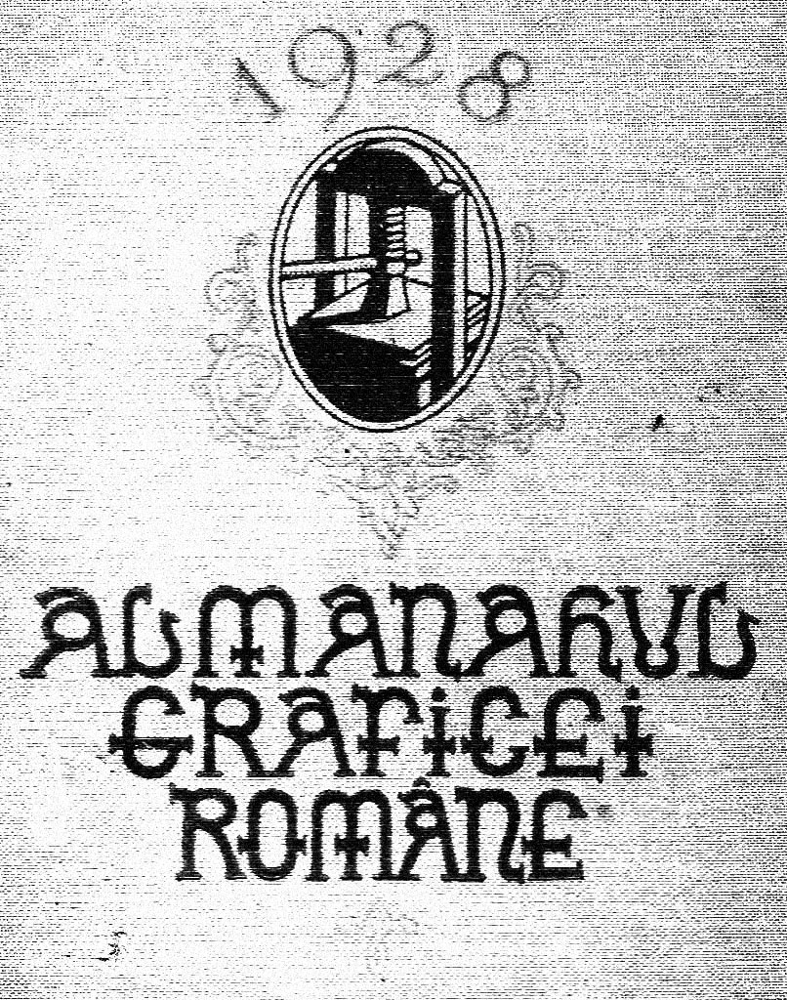
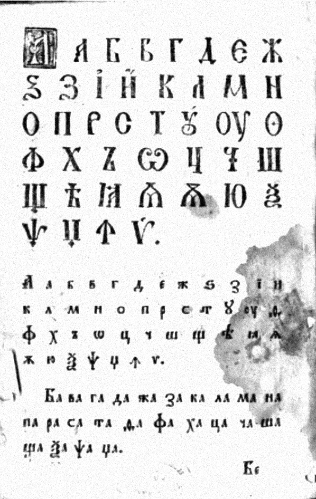
Thus, the French Revolution did not simply inspire imitation; it reinforced a broader cultural shift from restricted typographic access dictated by the Church to the experimentation of emerging type designers. The adoption of foreign writing models initiated a search for new forms of expression and new ways of disseminating knowledge, through a deliberate work within the typographic heritage of European scholars. The language, along with the printing techniques, became widely accessible and easy to distribute. What was once a radical expansion of access now appears to be a taboo in today’s realities, where abundance and mass production have taken over, yet are often controlled by different forms of institutional power.
PART 2
Monopoly. Exclusivity. Open-source
The switch to Latin script was, at its core, due to a struggle over access. The church regulated who could use and distribute the liturgical texts, ensuring that people could benefit from their ideas only within sacred places.
In modern times, churches have shifted to corporations. The power is silent and hidden behind the rhetoric of “access”. Under the illusion of the so-called free market, established systems regulate both the creation and distribution of knowledge, producing an illusion of openness while maintaining control. Therefor, digital replication and piracy come in hand when talking about alternative ways of design leberation. They represent a vital practice for media and tools distribution inside communities with limited finanical access and unstable geopolitical situation. The following chapter will present the big typographic holders alongside independent designer fighting for openess and contributing to general culture.
Breaking the modern monopolies
While the church once had the power to control written language, today’s gatekeepers of typography are often private corporations that own and license typefaces. For example, Monotype Imaging owns over 250 thousand fonts, including iconic typefaces like Helvetica, Arial, and Times New Roman. Monotype (fig.10) dominates the type industry through aggressive acquisitions and by licensing fonts to major brands and developers. For instance, MyFonts, with its 4,500 foundries and over 250,000 typefaces, has become a go-to marketplace. While platform provides designers exposure to their work, Monotype takes a 50% commission on every sale, leaving many designers with limited income alternatives.
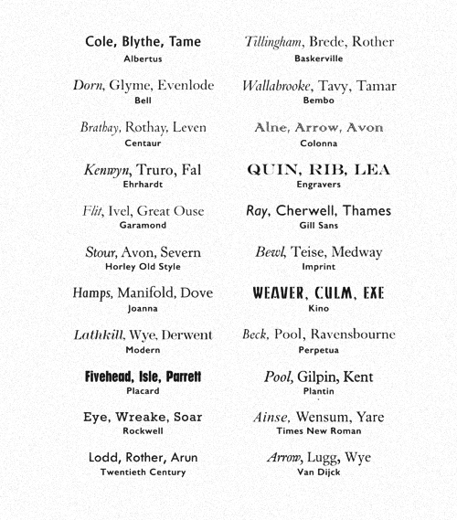
How did Monotype manage to build such an empire and who owns our words?
In the 60's, when Monotype machines were in use, installing their equipment was necessary to work with their typefaces. With the invention of photocomposition, these machines were replaced, shifting Monotype’s influence from physical control to software-based control around 1970. Many popular typefaces were digitized and now fall under EULA regulations, treating digital fonts as software that require a license and limit the amount of users. As licensing prices increased and subscription models developed. New forms of financial control emerged in typography, alongisede copyright regulations and IP. In this context, copyright and intellectual property laws can hinder creativity and new ideas by restricting access to design tools. For example, Kembrew McLeod argues in Freedom of Expression that strict copyright often hurts creativity. He cites Thomas Jefferson’s view that ideas should spread freely, which is vital for a healthy democracy.
Other corporations sought for their own alternatives. Giants like Apple and Microsoft ventured into designing derivative typefaces based on widely used designs, taking advantage of absent copyright protection in the phototypesetting market of the 1970s. Clones like Liberation Sans were designed as alternatives to the Microsoft Office software package. It allowed the Liberation fonts to serve as a free, open-source replacement of the proprietary Monotype fonts without changing the document layout.
Open-source typefaces emerged alongside free software, accelerating rapidly with the web font revolution. Notably, the creation of FontForge (fig.11) marked a key milestone for type designers, followed by the adoption of the Open Font License and the launch of Google Fonts in 2010, which democratized access to free typography. Examples like Source Sans Pro, launched by Adobe, offer source materials so that anyone may modify the typeface to suit their whims. The core principle of open source is that everyone can download the original file and develop it, and platforms like GitHub provide robust infrastructure for sharing and hosting files, serving as a hub for autonomous creatives designing their own tools.
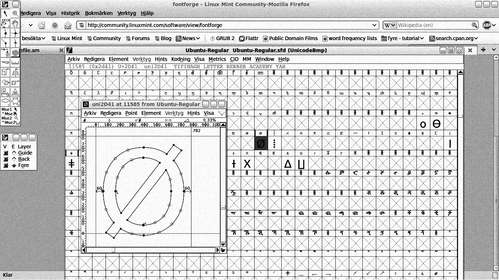
Font Playgrounds. Alternatives
We notice that, with the development of digital reproduction, corporations can no longer guarantee the exclusivity of the products they provide. This shift highlights replication as a fundamental principle for indipendent designers, that shape the realities of the communities they belong to. By sharing try-outs with others, designers encourage various forms of experimentation through open libraries and archives of tools.
DaFont (fig.12) operates as a decentralized archive, where users can both consume and contribute to the typefaces. Its extensive library draws on creativity, and what seemed impossible to be a typeface is now in high demand on DaFont. Its library is not as curated as Monotype’s, yet its originality makes this archive so recognizable and trustworthy. The vernacular nature of this platform brings passion and encourages exploration through its endless categories. The existence of this platform suggests that the desire for open access is a practical matter. The more variations of a typeface are produced, the less restrictive becomes the industry, giving space for vernacular shapes and forms, that could never make sense in a structured system.
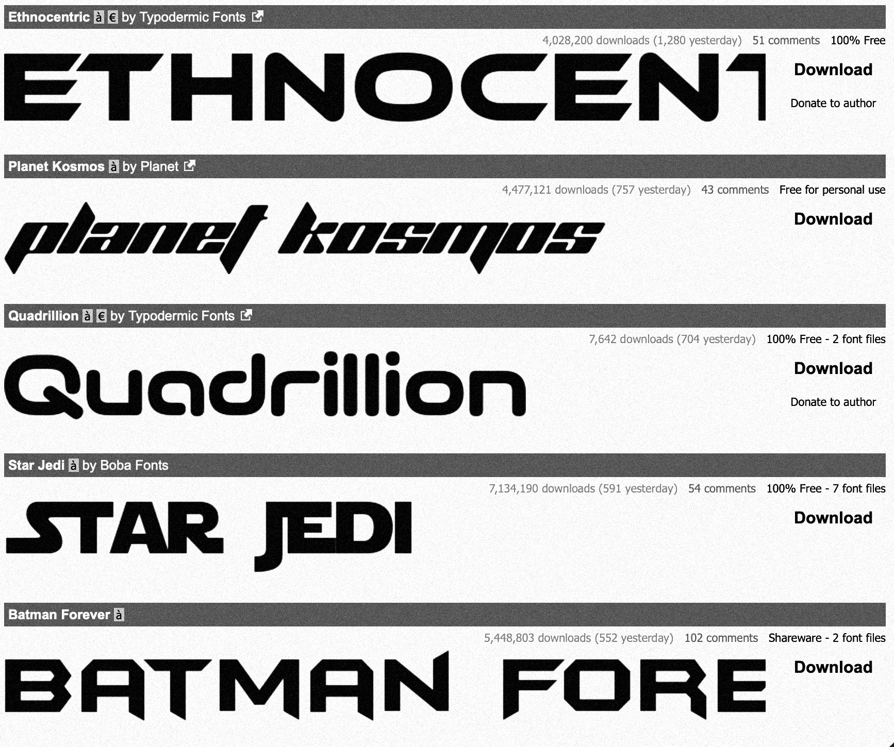
While I am not advocating the legality of most of the typefaces on DaFont, hybrid letter styles provide a creative structure that encourage experimentation and error. Imitation can generate new forms of value by increasing accessibility. Thus, the widespread circulation of font replicas enables more people to engage in design production, even when they cannot afford licensed versions. Similar platforms like 1001fonts and archives on Are.na offer open-source, free-to-use font libraries for personal and commercial use.
Piracy. Addiction. Control
With the advance of digital reproduction, more illegal copies are uploaded online and downloaded by users worldwide. We use the word “piracy” to describe the increasingly growing digital practices of copying that fall outside the boundaries of copyright law. It is agreed that piracy is “wrong”, yet we overlook a crucial aspect dictated by access to media in countries where media distribution is not covered.
"We could try to excuse piracy by arguing that it actually helps the copyright owner. When “stealing” Windows, for example, that makes the user dependent on Microsoft. While Microsoft loses the value of the software that was taken, it gains users accustomed to life in the Microsoft world. Over time, as the nation grows wealthier, more and more people will buy software rather than steal it. And hence, over time, because that buying will benefit Microsoft, Microsoft benefits from the piracy. If instead of pirating Microsoft Windows, the user would use the GNU/Linux operating system, then the user would not eventually be buying Microsoft."
This argument, as used in Free Culture, made me think about my relationship with the Adobe Suite. Art students are given free access to the entire Adobe ecosystem for the duration of their studies, creating an addiction to the software. After graduation, students would not be able to use any other tool but the one from Adobe, following a subscription model. Alternative or open-source tools, such as GIMP or Krita, are rarely explored because of the clear financial struggle to keep up with changing trends and advancing technology, especially in AI-generated image production. The trust is built through a consistent delivery of tools and extensions that designers can integrate into their framework. Adobe makes use of its extensive team and holds the biggest share of design market. There is no other alternative at the moment that would be as handy as Adobe; yet, taking into consideration the subscription plans, few can afford it.
I learned Photoshop through a pirated version. My hobby was not worth paying money for on a monthly basis. I was not even making any money with it, as long as collaging images and applying fonts was done for fun. P2P technology and digital replication are a way to get your hands on those tools. Pirate versions most of the time come with malicious files, but skillful hands could get rid of them. Piracy becomes a way to acquire something, placing yourself in an undefined trial state. Even if I use a licensed version now, it clearly creates a cycle of dependency for the future, as no viable alternative exists on the market.
Conclusion
This paper exemplified that control can not limit curiosity of discovering more. Replication can construct the bridge between access and restriction, through small gestures of mutation that are embeded into the act of repetition. In the Romanian Principalities, the switch to the Latin was a process of negotitation between desire to look into future while preserving its heritage. By reworking foreign models to meet local needs, intellectuals challeged the Church’s monopoly on knowledge and created a system that was easier to print, making it available to more people. Transitional typefaces and the work of designers like Virgil Molin show that imitation was a deliberate intention that shaped cultural identity and opened broader participation in literacy.
Exploring today, the same dynamics appear in digital culture where corporations like Adobe, Microsoft and Monotype control tools and typefaces we use, shaping access through subscription models and restrictive licenses. Free or pirated alternatives, alongside open-source platforms emerge as the modern equivalents of Latinization, opening ways for students and creatives to learn and experiment. Whether in print or digital form, the circulation of type and knowledge reveals that creativity emerges from an open materials to those who are eager to share, explore and innovate.
“Advance or grow out from the middle, and that’s where you have to get to work, that’s where everything unfolds.” — Gilles Deleuze
Bibliography
Anderson, Benedict. Imagined Communities: Reflections on the Origin and Spread of Nationalism. Verso, 1983
Bhabha, Homi K. The Location of Culture. Routledge, 1994
Boon, Marcus. In Praise of Copying. Harvard University Press, 2010
de Kloet, Jeroen, Chow Yiu Fai, and Lena Scheen, editors. Boredom, Shanzhai, and Digitisation in the Time of Creative China. Amsterdam University Press, 2019
Georgescu, Vlad. The Romanians: A History. Ohio State University Press, 1991
Lessig, Lawrence. Free Culture: How Big Media Uses Technology and the Law to Lock Down Culture and Control Creativity. Penguin Press, 2004
Lessig, Lawrence. The Future of Ideas: The Fate of the Commons in a Connected World. Random House, 2001
Panaitescu, Petre P. Interpretări românești. Bucharest, 1947
Schwartz, Hillel. The Culture of the Copy: Striking Likenesses, Unreasonable Facsimiles. Zone Books, 1996
Benjamin, Walter. The Work of Art in the Age of Mechanical Reproduction. 1936
Vasina, Anna. “Cyrillic Printing in Romanian Lands: From the 16th to the 19th Century.”
Scrierea Chirilică Românească. Direcția Generală a Arhivelor Statului, Facultatea de Istorie și Filosofie a Universității București, 1982
Romanoslavica XV: Literatură – Istorie. Asociația Slaviștilor din Republica Socialistă România, Bucharest, 1967
“The Fascinating Realm of Fonts: Unveiling Monotype’s Dominance in the Industry.” Machine Dalal Magazine,
https://magazine.machinedalal.com/fascinating-realm-of-fonts-unveiling-monotypes-dominance-in-the-industry/
“The Free Press.” Monticello, https://www.monticello.org/the-art-of-citizenship/the-free-press
“Adobe Dives into the Open Source Font World with Source Sans Pro.” WIRED, https://www.wired.com/2012/08/adobe-dives-into-the-open-source-font-world-with-source-sans-pro/